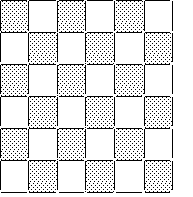

Q.
What is the maximum number of 3×3 squares that can be
formed from the squares in the 6×6 checker board to the right?

Solution: Clearly, there are more than four 3×3 squares in the
checker board eliminate (A).
Next, eliminate (B) since it merely repeats a
number from the problem. Further, eliminate (E) since it is the greatest. This
leaves choices (C) and (D). If you count carefully, you will find sixteen 3×3 squares in the
checker board. The answer is D.